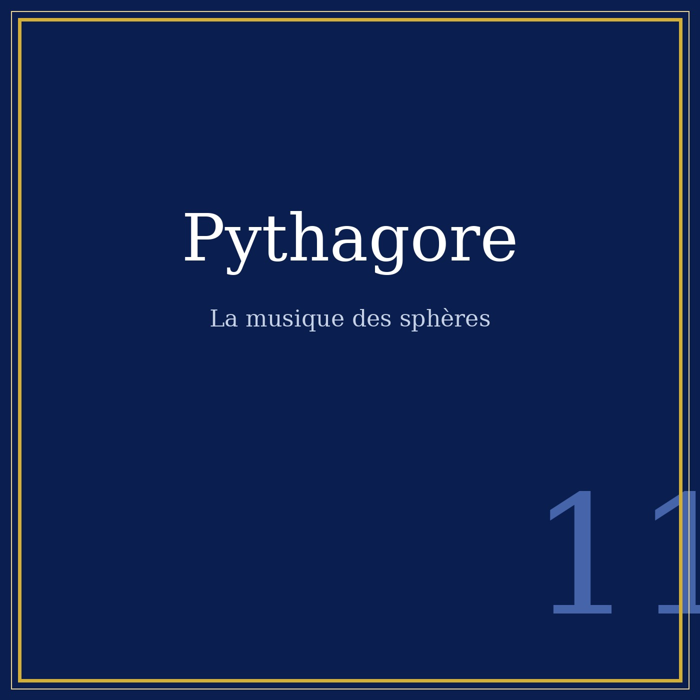

Portrait n°11 — la tétraktys, l'harmonie et l'école de Croton
Œuvre de fiction radiophonique et biographique. Les faits sont réels et sourcés ; l'entretien est une reconstitution imaginée.

Écoutez le portrait: Pythagore — 9 min 42 — 9 min 42, Spotify.
La tradition rapporte que tout commence dans une forge : Pythagore y remarque que des marteaux de poids simples entre eux produisent des sons agréables ensemble. L'anecdote est légendaire, mais l'intuition derrière est bien de lui et de son école :
Deux cordes dont les longueurs sont en rapport simple sonnent juste : 2 pour 1, c'est l'octave ; 3 pour 2, la quinte.
Pour la première fois, un lien mathématique est établi entre les nombres et la beauté. Le monde devient mesure — et la musique, une science.
Les pythagoriciens jurent sur la tétraktys : dix points disposés en triangle (1+2+3+4), qui encode les rapports harmoniques fondamentaux — l'octave, la quinte, la quarte. « La source et la racine de la nature » disait leur serment.
Pythagore distingue la musique des instruments, la musique de la voix humaine (le chant qui soigne l'âme), et la musique des sphères : l'harmonie des astres, inaudible mais réelle, que l'âme purifiée peut percevoir. Il faut attendre Kepler — deux mille ans plus tard — pour que l'idée reçoive un début de confirmation physique, et nos jours pour la « sonification » des données d'ondes gravitationnelles.
À Croton (Italie du Sud), Pythagore fonde une communauté qui vit selon ses règles : végétarisme (croyance à la transmigration des âmes), exigence de silence d'abord, de mémoire, d'écoute — la légende veut que ses élèves écoutent cinq années sans jamais parler. Les femmes y sont admises à égalité, une exception dans l'Antiquité.
Beaucoup d'éléments de sa vie sont des légendes tardives : le sacrifice de cent bœufs à la découverte de son théorème, sa mort dans l'incendie de l'école. Ce qui est certain : l'idée que le monde est nombre a changé l'histoire — des maths, de la musique, et de notre façon d'écouter.
Sources : textes antiques (Diogène Laërce, Jamblique, Porphyre), études sur la tétraktys et l'école pythagoricienne. Faits recoupés octobre 2026.